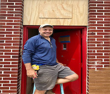

We are working with the Bethel AME church in restoring their food pantry,clothing closet and community garden to once again again serve the city of Asbury Park. The Bethel food pantry is a community partner with Fullfill of Monmouth and Ocean Counties. Thanks to all our volunteers on this project for helping to restore this historic site. The Grammy hit song "HoneySuckle Rose" was written in this building in 1928.
We took an opportunity to help the Bethel AME church once again. We cleaned up and converted a storage room into a meeting room. the project was productive, fun and helpful to the community. The church now has a beautiful meeting room instead of a cluttered storage room, making great use of space.


COVID didn’t stop us from wanting to help people and it’s been great to refocus on our own backyard. It has been nothing but pure joy for us to give back.-Freddie Fiorentino